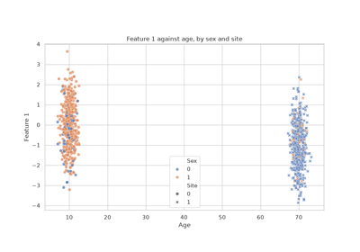
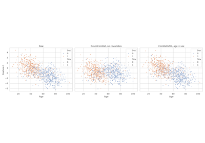

Covariate#
- class uniharmony.datasets.Covariate(name: str, site_distributions: list[~uniharmony.datasets._make_covariates.CovariateSiteDistribution] = <factory>, categories: list = <factory>, effect: float | ~numpy._typing._array_like.ArrayLike = 0.0, effect_shape: ~typing.Literal['linear', 'quadratic', 'sigmoid'] | ~collections.abc.Callable[[~numpy.ndarray], ~numpy.ndarray] = 'linear', effect_features: int | float | ~collections.abc.Sequence[int] | None = None, depends_on: dict[str, ~collections.abc.Sequence[float]] | None = None)#
Full specification for a single synthetic covariate across all sites.
Each site gets its own
CovariateSiteDistribution, which allows arbitrarily different demographic profiles per site (e.g. site A young and male-heavy, site B older and female-heavy).The
kind("continuous"or"categorical") is inferred automatically from the first entry insite_distributions— you never need to set it explicitly.If only one
CovariateSiteDistributionis supplied, it is broadcast to every site automatically.- Parameters:
- namestr
Column name used as the key in the returned covariates dictionary.
- site_distributionslist[CovariateSiteDistribution]
One distribution per site (in site order), or a single entry that is broadcast to all sites. The
kindof each entry must be consistent (all continuous or all categorical).- categorieslist, default [0, 1]
Unique category labels for categorical covariates. Must match the length of every
CovariateSiteDistribution.probsvector. Ignored for continuous covariates.- effectfloat or array-like, default 0.0
Effect of the covariate on the features, the same in every site. It is added to the signal before the site effect, so a covariate whose distribution differs between sites makes the sites differ through it (confounding), as in real multi-site data. Unit: the reference SD of each feature (its pooled within-class SD in the signal, the unit of all strengths of
make_multisite_classification).Continuous covariate:
effectis the standard deviation, over all samples, of the covariate’s contribution to an affected feature. Witheffect_shape="linear"it is the change of the feature per pooled SD of the covariate (a standardized slope).Categorical covariate:
effectis the mean difference between each category and the first category ofcategories.
A scalar is multiplied, for each affected feature, by a weight drawn from U(0.5, 1.5) (for a categorical covariate, independently for each non-reference category), so the features are affected by different amounts with mean
effect. An array of shape(n_features,)gives the effect on every feature exactly (for a categorical covariate, the same for every non-reference category; or an array of shape(n_categories - 1, n_features)). Negative values decrease the features. The effects used are returned bymake_multisite_classification(..., return_ground_truth=True).- effect_shape{“linear”, “quadratic”, “sigmoid”} or callable, default “linear”
Shape of the effect of a continuous covariate, applied to the covariate
zstandardized over all samples:z,z**2ortanh(2 z). A callable receives the raw covariate values (an array of shape(n_samples,)) and returns an array of the same shape. The result is standardized to mean 0 and SD 1 over all samples, soeffectkeeps its meaning for every shape. Only"linear"is allowed for categorical covariates.- effect_featuresint, float, sequence of int or None, default None
Features affected by the covariate:
Nonefor all features, an intkfor the firstkfeatures, a float in (0, 1] for that fraction of the first features, or a sequence of feature indices. Ignored wheneffectis an array.- depends_ondict or None, default None
Makes a continuous covariate depend on a categorical one, e.g. total intracranial volume on sex:
{"sex": [0.0, -160.0]}adds, to the mean of each sample, the shift of its category ofsex(one value per category, in the units of this covariate). The categorical covariate must be in the samecovariateslist.
- Attributes:
kindInferred kind:
'continuous'or'categorical'.
- Raises:
- ValueError
If
site_distributionsis empty, entries mix continuous and categorical distributions, or an effect parameter is invalid.
Examples
Same distribution at every site (broadcast from one entry):
>>> cov = Covariate( ... name="age", ... site_distributions=[ ... CovariateSiteDistribution(loc=45.0, scale=10.0, clip=(18.0, 90.0)), ... ], ... effect=0.5, ... )
Different distribution per site (two sites, explicit):
>>> cov = Covariate( ... name="age", ... site_distributions=[ ... CovariateSiteDistribution(loc=30.0, scale=5.0, clip=(18.0, 90.0)), ... CovariateSiteDistribution(loc=60.0, scale=8.0, clip=(18.0, 90.0)), ... ], ... effect=-0.5, ... effect_shape="quadratic", ... )
Categorical covariate — kind inferred from
probs; category 1 is 0.3 reference SD above category 0 on the first 5 features:>>> cov = Covariate( ... name="sex", ... site_distributions=[ ... CovariateSiteDistribution(probs=[0.4, 0.6]), ... ], ... effect=0.3, ... effect_features=5, ... )
- class uniharmony.datasets.CovariateSiteDistribution(loc: float | None = None, scale: float = 1.0, clip: tuple[float, float] | None = None, probs: list[float] | None = None)#
Distribution parameters for one covariate at one site.
Pass
loc/scale/clipfor a continuous covariate, orprobsfor a categorical one. Thekindof the parentCovariateis inferred automatically from which fields are set, so you never need to declare it explicitly.- Parameters:
- locfloat | None, default None
Mean of the Gaussian draw. Setting this marks the distribution as continuous. Mutually exclusive with
probs.- scalefloat, default 1.0
Standard deviation of the Gaussian draw. Only used when
locis set (continuous covariate).- cliptuple[float, float] | None, default None
Optional
(min, max)clipping applied after drawing continuous samples (e.g.(0.0, 100.0)for age). Only used for continuous covariates.- probslist[float] | None, default None
Probability vector over the parent
Covariate.categories. Setting this marks the distribution as categorical. Values are normalised to sum to 1 automatically. Mutually exclusive withloc.
- Attributes:
kindInferred kind:
'continuous'or'categorical'.
- Raises:
- ValueError
If both
locandprobsare supplied, or if neither is supplied.
Examples
Continuous — older participants, mean 60, sd 8, clipped to [18, 90]:
>>> older = CovariateSiteDistribution(loc=60.0, scale=8.0, clip=(18.0, 90.0))
Categorical — 70 % female site:
>>> female = CovariateSiteDistribution(probs=[0.3, 0.7])
Examples#

Multisite data generation with custom covariates

ComBatGAM with covariates imbalanced across sites